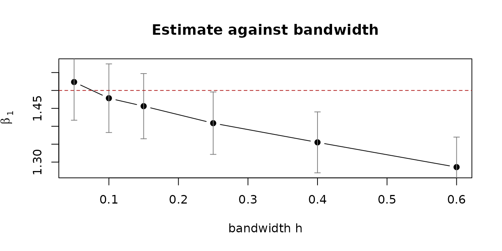
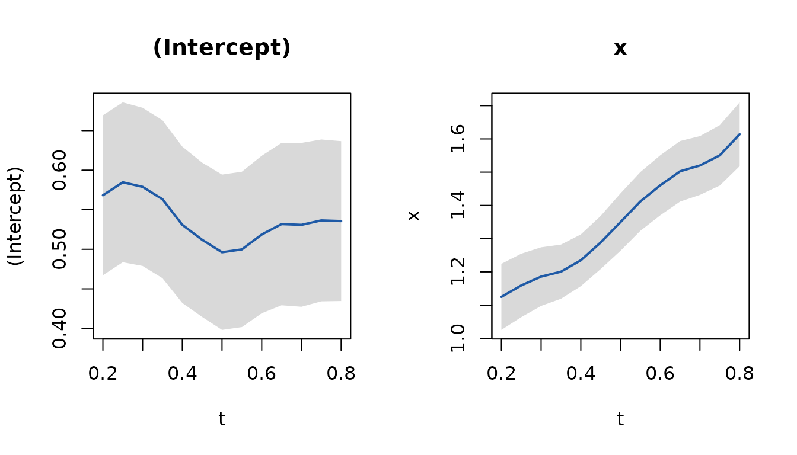

The two data frames come first in every call, so the estimators compose with the native pipe. Examples below use it where it reads better.
The problem
Suppose you want to know how a biomarker relates to a symptom score. The biomarker is drawn at clinic visits; the symptom score is collected by a questionnaire on its own schedule. Neither is measured often, and the two schedules have nothing to do with each other. You have, per subject,
- a response process \(Y_i(\cdot)\) observed at times \(T_{i1}, \dots, T_{iL_i}\),
- a covariate process \(X_i(\cdot)\) observed at times \(S_{i1}, \dots, S_{iM_i}\),
and \(\{T_{ij}\}\) and \(\{S_{ik}\}\) never coincide. The model you want is the ordinary one,
\[E\{Y_i(t) \mid X_i(t)\} = g\{X_i(t)^\top \beta\},\]
but \(Y_i\) and \(X_i\) are never observed at the same \(t\), so not one row of the data set is a complete observation of the regression you are trying to fit.
This is the setting of Cao, Zeng and Fine (2015). The package
implements their two estimators: kee_async() for a constant
\(\beta\), and
kee_async_td() for a coefficient curve \(\beta(t)\).
Two shortcuts that do not work
Both of the obvious fixes are common in practice, and both fail quietly. They return plausible numbers with plausible standard errors.
Last value carried forward replaces \(X_i(T_{ij})\) by the most recent observed covariate value. This is measurement error with a twist: the error does not shrink as the sample grows. The expected gap back to the previous observation is set by the visit schedule and has nothing to do with \(n\), so the substituted covariate keeps a fixed error variance forever. You get classical attenuation. \(\hat\beta\) converges, but to something closer to zero than \(\beta\).
Regression calibration smooths the covariate path first and substitutes the smoothed value. This feels more careful and has the same problem: to smooth at \(T_{ij}\) you need observations near \(T_{ij}\), and under sparse sampling the window cannot shrink without emptying. Whatever bandwidth keeps the window occupied also keeps a non-vanishing lag spread, and the attenuation returns. For a nonlinear link there is a second error on top: the estimating equation needs the average of \(g(\cdot)\), and you have supplied \(g\) of the average.
What the kernel-weighted equation does instead is give up on reconstructing \(X_i(T_{ij})\) at all. It evaluates the link at each covariate vector you actually have, and lets a weight express how much that observation says about a given response occasion.
The estimator
\[U_n(\beta) = n^{-1} \sum_i \sum_j \sum_k W_h(T_{ij} - S_{ik})\, X_i(S_{ik}) \left[ Y_i(T_{ij}) - g\{X_i(S_{ik})^\top \beta\} \right] = 0,\]
with \(W_h(u) = W(u/h)/h\) and \(W\) the Epanechnikov kernel. Every (response, covariate) pair within a subject contributes, weighted by how far apart in time the two occasions are. Pairs more than \(h\) apart drop out; pairs close together dominate.
The rate is \((nh)^{1/2}\). This is a smoothing problem wearing a regression problem’s clothes, so standard errors shrink more slowly than you are used to and the bandwidth becomes something you have to think about.
Time does not have to lie on \([0,1]\) here. The equation sees times only
through \((T - S)/h\), so any units
work as long as h is in the same ones. That is the one
thing to get right, and the package warns when it looks wrong.
A worked example
sim_async_data() generates the design from Section 4 of
the paper: response and covariate observation times are independent
Poisson streams, and the covariate is a Gaussian process.
set.seed(2024)
d <- sim_async_data(n = 400, beta = c(0.5, 1.5))
str(d$y)
#> tibble [1,985 × 3] (S3: tbl_df/tbl/data.frame)
#> $ id : int [1:1985] 1 1 1 1 1 1 1 2 2 2 ...
#> $ time: num [1:1985] 0.303 0.416 0.457 0.68 0.698 ...
#> $ y : num [1:1985] 1.03 2.36 2.85 2.65 2.24 ...
str(d$x)
#> tibble [1,987 × 3] (S3: tbl_df/tbl/data.frame)
#> $ id : int [1:1987] 1 1 1 1 2 2 3 3 4 4 ...
#> $ time: num [1:1987] 0.119 0.704 0.902 0.953 0.192 ...
#> $ x : num [1:1987] 0.5317 0.0115 -0.292 0.3258 -0.9327 ...Two tables, sharing only id. There is no way to merge
them without inventing rows, which is precisely the point.
c(
subjects = length(unique(d$y$id)),
response_occasions = nrow(d$y),
covariate_occasions = nrow(d$x),
median_per_subject_y = median(table(d$y$id)),
median_per_subject_x = median(table(d$x$id))
)
#> subjects response_occasions covariate_occasions
#> 400 1985 1987
#> median_per_subject_y median_per_subject_x
#> 5 5The formula spans both tables, taking its left-hand side from
data_y and its right-hand side from data_x.
id and time name columns present in each:
fit <- d$y |>
kee_async(d$x, y ~ x, id = id, time = time, h = 0.25)
summary(fit)
#> Call:
#> kee_async(data_y = d$y, data_x = d$x, formula = y ~ x, id = id,
#> time = time, h = 0.25)
#>
#> Asynchronous longitudinal regression (identity link, full kernel)
#> n= 400 subjects bandwidth h = 0.25
#>
#> Estimate Std. Error z value Pr(>|z|)
#> (Intercept) 0.441986 0.057943 7.6279 2.386e-14 ***
#> x 1.408638 0.044451 31.6897 < 2.2e-16 ***
#> ---
#> Signif. codes: 0 '***' 0.001 '**' 0.01 '*' 0.05 '.' 0.1 ' ' 1
#>
#> Optimization status: 0The truth is \(\beta = (0.5, 1.5)\).
npair records how many weighted pairs actually
contributed:
Standard generics work as usual:
Tidy output
tidy(), glance() and augment()
return tibbles, so a fit goes straight into the rest of a tidy workflow
without reshaping.
tidy(fit, conf.int = TRUE)
#> # A tibble: 2 × 7
#> term estimate std.error statistic p.value conf.low conf.high
#> <chr> <dbl> <dbl> <dbl> <dbl> <dbl> <dbl>
#> 1 (Intercept) 0.442 0.0579 7.63 2.39e- 14 0.328 0.556
#> 2 x 1.41 0.0445 31.7 2.16e-220 1.32 1.50
glance(fit)
#> # A tibble: 1 × 7
#> nobs nterms h npair link one_sided convergence
#> <int> <int> <dbl> <int> <chr> <lgl> <int>
#> 1 400 2 0.25 4324 identity FALSE 0augment() attaches the fitted mean to the
covariate table, because that is where a fitted value
lives here: the estimating equation evaluates the link at each observed
covariate vector, and the kernel weight is what ties that vector to a
response occasion.
augment(fit, d$x)
#> # A tibble: 1,987 × 4
#> id time x .fitted
#> <int> <dbl> <dbl> <dbl>
#> 1 1 0.119 0.532 1.19
#> 2 1 0.704 0.0115 0.458
#> 3 1 0.902 -0.292 0.0307
#> 4 1 0.953 0.326 0.901
#> 5 2 0.192 -0.933 -0.872
#> 6 2 0.456 -0.523 -0.294
#> 7 3 0.0395 -0.480 -0.234
#> 8 3 0.748 -0.366 -0.0731
#> 9 4 0.0143 -1.84 -2.15
#> 10 4 0.0156 -1.86 -2.18
#> # ℹ 1,977 more rowsThere is deliberately no .resid column. A residual needs
a response value at \(S_{ik}\), which
is exactly what asynchronous data does not have; reporting one would
mean inventing it. The fit does not retain its data, so
augment() needs data_x handed back to it.
Choosing the bandwidth
Because the rate is \((nh)^{1/2}\),
h trades variance against bias directly: small
h admits few pairs, large h admits pairs whose
times are far apart and so pulls in a bias. kee_async_cv()
chooses it by cross-validation over subjects, scoring
each candidate by the kernel-weighted squared error on the held-out
subjects.
cv <- d$y |>
kee_async_cv(d$x, y ~ x,
id = id, time = time,
h_grid = c(0.05, 0.10, 0.15, 0.25, 0.40, 0.60),
K = 5, seed = 1, quiet = TRUE
)
#> Warning: the selected bandwidth is at an endpoint of 'h_grid'; widen the grid
#> to check that the minimum is interior
cv
#> Call:
#> kee_async_cv(data_y = d$y, data_x = d$x, formula = y ~ x, id = id,
#> time = time, h_grid = c(0.05, 0.1, 0.15, 0.25, 0.4, 0.6),
#> K = 5, seed = 1, quiet = TRUE)
#>
#> 5-fold subject-level cross-validation
#>
#> # A tibble: 6 × 3
#> h cvloss nfold_used
#> <dbl> <dbl> <dbl>
#> 1 0.05 1.12 5
#> 2 0.1 1.16 5
#> 3 0.15 1.22 5
#> 4 0.25 1.35 5
#> 5 0.4 1.53 5
#> 6 0.6 1.69 5
#>
#> Selected h = 0.05
#>
#> Coefficients at the refit:
#> (Intercept) x
#> 0.4667178 1.5235152cv_results is a tibble, so it filters and plots
directly:
cv$cv_results
#> # A tibble: 6 × 3
#> h cvloss nfold_used
#> <dbl> <dbl> <dbl>
#> 1 0.05 1.12 5
#> 2 0.1 1.16 5
#> 3 0.15 1.22 5
#> 4 0.25 1.35 5
#> 5 0.4 1.53 5
#> 6 0.6 1.69 5Two details of that criterion are worth knowing, because they determine whether it is meaningful at all.
Folds are over subjects, never rows. Rows within a subject come from one trajectory. Splitting by row would put the same subject on both sides and leak the answer into the held-out score.
The loss is divided by the total weight. A wider bandwidth admits more pairs and so accumulates more total squared error regardless of fit quality. Without the denominator the criterion would select the smallest candidate every time, which is not a bandwidth selection rule but a fixed point.
If the selected value lands on an endpoint of the grid, the function warns and you should widen the grid: a minimum on the boundary is an artefact of where you stopped looking.
Leaving h_grid unset generates one from the data,
log-spaced over \([2(Q_3 - Q_1)n^{-0.7},\,
2(Q_3 - Q_1)n^{-0.3}]\) where \(Q_1,
Q_3\) are quartiles of the pooled observation times. It adapts to
whatever units time is in.
Check how much the answer moves with h
Cao, Zeng and Fine assume the covariance function of the covariate
process is twice differentiable, which gives a bias of order \(h^2\). Their Section 6 notes that relaxing
this to one-sided differentiability leaves a bias of order \(h\) instead. That weaker class admits
processes with independent increments, including the Ornstein-Uhlenbeck
process sim_async_data() uses by default.
The practical symptom is an estimate that drifts steadily as
h grows. It costs nothing to look:
hs <- c(0.05, 0.10, 0.15, 0.25, 0.40, 0.60)
sweep <- t(sapply(hs, function(h) {
f <- d$y |> kee_async(d$x, y ~ x, id = id, time = time, h = h)
c(h = h, est = coef(f)[2], se = sqrt(vcov(f)[2, 2]))
}))
round(sweep, 3)
#> h est.x se
#> [1,] 0.05 1.524 0.054
#> [2,] 0.10 1.478 0.049
#> [3,] 0.15 1.456 0.046
#> [4,] 0.25 1.409 0.044
#> [5,] 0.40 1.355 0.043
#> [6,] 0.60 1.286 0.043
plot(sweep[, "h"], sweep[, 2],
type = "b", pch = 19, ylim = range(sweep[, 2] + c(-2, 2) * sweep[, 3]),
xlab = "bandwidth h", ylab = expression(hat(beta)[1]),
main = "Estimate against bandwidth"
)
arrows(sweep[, "h"], sweep[, 2] - 1.96 * sweep[, 3],
sweep[, "h"], sweep[, 2] + 1.96 * sweep[, 3],
angle = 90, code = 3, length = 0.04, col = "grey50"
)
abline(h = 1.5, lty = 2, col = "firebrick")
The estimate slides away from the truth as h grows, at a
rate roughly linear in h. That is the \(O(h)\) term, and it is telling you that the
covariance of this covariate process has a kink at the diagonal. A plot
that is flat across a range of h says the opposite and is
reassuring. Either way, report the plot, not one bandwidth.
Half kernel or full kernel
By default the kernel is two-sided: a response at \(T_{ij}\) is informed by covariate
observations on either side of it. If the covariate must be already
known at the response time, whether for a causal reading or because
later covariate values could not have influenced the response, set
one_sided = TRUE.
full <- kee_async(d$y, d$x, y ~ x, id = id, time = time, h = 0.25)
half <- kee_async(d$y, d$x,
y ~ x, id = id, time = time,
h = 0.25, one_sided = TRUE
)
rbind(
full = c(coef(full), pairs = full$npair),
half = c(coef(half), pairs = half$npair)
)
#> (Intercept) x pairs
#> full 0.4419863 1.408638 4324
#> half 0.4571807 1.385280 2184The half kernel discards roughly half the pairs, so at a fixed
h it is noisier. Select h under the same
setting you intend to fit with. kee_async_cv() takes
one_sided for exactly this reason.
Time-varying coefficients
If the association itself changes over follow-up,
kee_async_td() estimates \(\beta(t)\) pointwise. At a target time
\(t\) the response and covariate
occasions are weighted by their separate distances to
\(t\); the lag between them never
enters.
\[U_n\{\beta(t)\} = n^{-1} \sum_i \sum_j \sum_k W_{h_1}(t - T_{ij})\, W_{h_2}(t - S_{ik})\, X_i(S_{ik}) \left[ Y_i(T_{ij}) - g\{X_i(S_{ik})^\top \beta(t)\} \right] = 0.\]
Because both time arguments are smoothed, the rate is the bivariate \((n h_1 h_2)^{1/2}\). This is much slower than the time-invariant fit, and a sample size that gave a comfortable constant-\(\beta\) answer can be far too small here.
set.seed(2025)
dt <- sim_async_data(
n = 800, beta = function(tt) cbind(0.5, 1 + tt),
lambda_y = 8, lambda_x = 8,
x_cov = function(s, t) exp(-4 * (s - t)^2)
)
fit_td <- kee_async_td(dt$y, dt$x,
y ~ x, id = id, time = time,
times = seq(0.2, 0.8, by = 0.05), h = 0.2
)
plot(fit_td)
The truth is \(\beta_1(t) = 1 + t\). Compare the fitted curve against it:
tidy(fit_td, conf.int = TRUE) |>
subset(term == "x", select = c(time, estimate, conf.low, conf.high)) |>
head(4)
#> # A tibble: 4 × 4
#> time estimate conf.low conf.high
#> <dbl> <dbl> <dbl> <dbl>
#> 1 0.2 1.12 1.03 1.22
#> 2 0.25 1.16 1.06 1.25
#> 3 0.3 1.19 1.10 1.27
#> 4 0.35 1.20 1.12 1.28Three cautions when reading such a plot:
Each band covers its own target time. Read them together as a region for the whole curve and you are claiming much more than the data supports, so a curve straying outside at one or two times means little.
They carry no correction for smoothing bias either, so they cover
\(E\hat\beta(t)\) instead of \(\beta(t)\). A large bandwidth flattens the
curve toward a constant and the bands stay the same width. Refit at a
smaller h to see how much of the shape is smoothing.
Target times within a bandwidth of either end of the observed range
draw on a one-sided window and are the least trustworthy part of the
picture. Keep times inside the data.
If the bands cover a horizontal line across the whole range, the honest conclusion is that the data cannot resolve time variation. That is a different statement from evidence that \(\beta(t)\) is flat.
Links other than the identity
link = "log" and link = "logistic" fit the
corresponding generalised linear models by Newton-Raphson on the same
estimating equation. Everything above applies unchanged; the
cross-validation loss stays on the response scale.
set.seed(11)
db <- sim_async_data(n = 400, beta = c(0.3, 1.0), link = "logistic")
fit_b <- kee_async(db$y, db$x,
y ~ x,
id = id, time = time, h = 0.3, link = "logistic"
)
summary(fit_b)
#> Call:
#> kee_async(data_y = db$y, data_x = db$x, formula = y ~ x, id = id,
#> time = time, h = 0.3, link = "logistic")
#>
#> Asynchronous longitudinal regression (logistic link, full kernel)
#> n= 400 subjects bandwidth h = 0.3
#>
#> Estimate Std. Error z value Pr(>|z|)
#> (Intercept) 0.285310 0.059651 4.783 1.727e-06 ***
#> x 0.899442 0.068209 13.187 < 2.2e-16 ***
#> ---
#> Signif. codes: 0 '***' 0.001 '**' 0.01 '*' 0.05 '.' 0.1 ' ' 1
#>
#> Optimization status: 0Getting the units right
The single most common mistake is a bandwidth on a different scale
from the observation times: times in days, with h chosen as
though they were on the unit interval. Nothing about the estimator
requires \([0,1]\), so the package
cannot simply reject the data; instead it tells you when almost nothing
is contributing.
d_days <- d
d_days$y$time <- d$y$time * 365
d_days$x$time <- d$x$time * 365
fit_days <- kee_async(d_days$y, d_days$x,
y ~ x,
id = id, time = time, h = 1
)
#> Warning: only 62 of 1985 response occasions have a covariate observation within
#> h = 1. Check that 'h' is on the same scale as the observation times.Rescaling h by the same factor recovers the original fit
exactly, which is the scale-equivariance of the estimating equation:
fit_ok <- kee_async(d_days$y, d_days$x,
y ~ x,
id = id, time = time, h = 0.25 * 365
)
all.equal(coef(fit_ok), coef(fit))
#> [1] TRUENote that this differs from the survival estimators in the package, which do require times on \([0,1]\) because their spline basis and quadrature are built there, and which stop with an error otherwise.